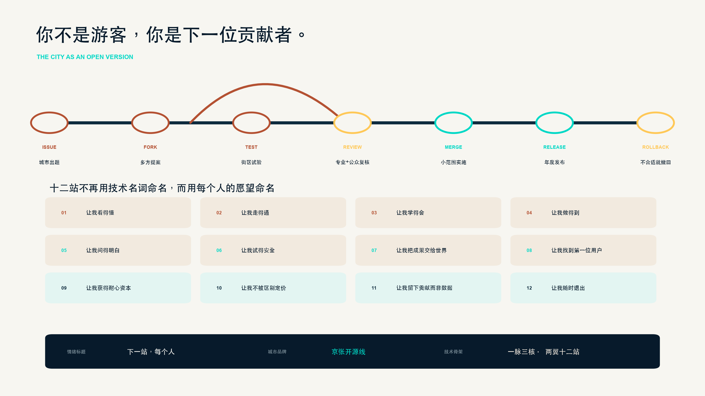
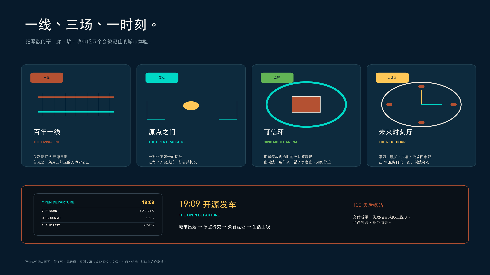
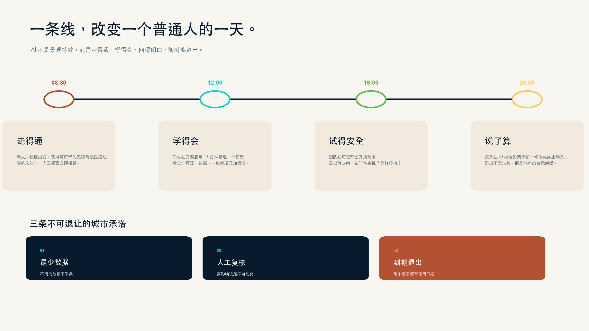
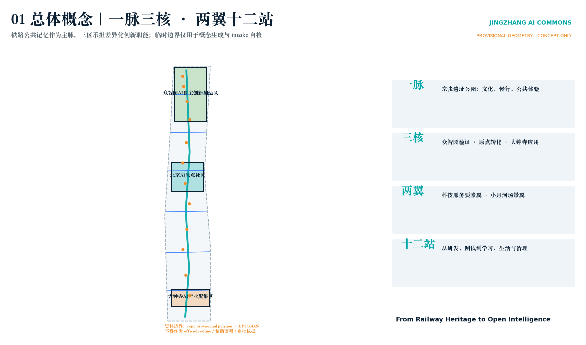
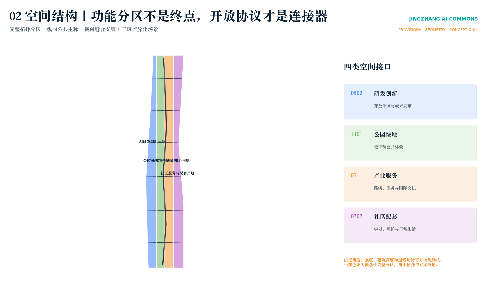
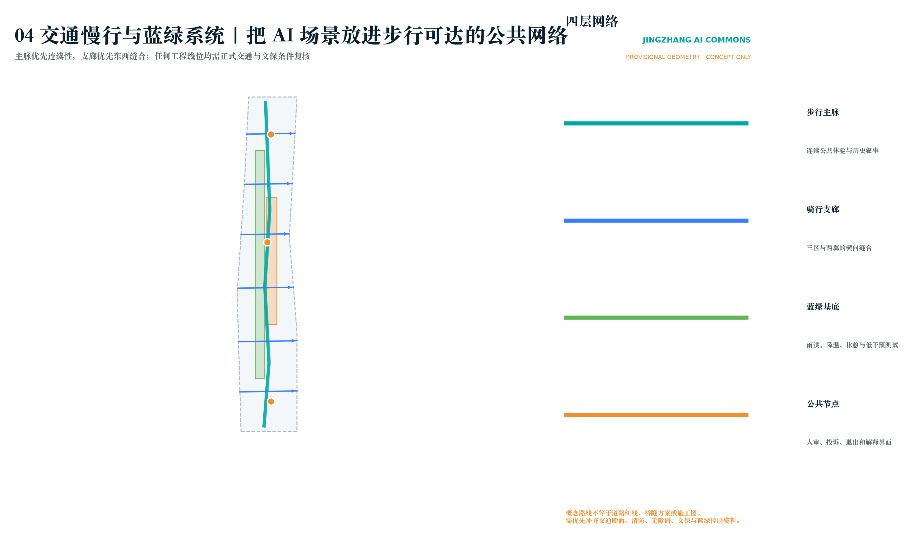

走得通
社区健康导航与无障碍就医接驳；不做无资质诊断，导航失效时由人工接管。
百年前，中国人自己修通京张；今天，让每个人都能向这座城市提交一次更新。你不是游客，你是下一位贡献者。
Issue → Fork → Test → Review → Merge → Release → Rollback，把开源协作真正转译成城市制度。

原来的亭、廊、墙和活动被收束成五个有共同记忆的城市体验。

AI+医疗、教育和商业从技术演示变成走得通、学得会、问得明白、随时能退出的日常服务。

社区健康导航与无障碍就医接驳；不做无资质诊断，导航失效时由人工接管。
开源课程、青少年模型素养站与 AI 夜校；不以未成年人画像换取效率。
小微商户共创、国际路演与多语言服务；无人脸识别、个性化广告和差别定价。
1909 年京张铁路建成通车。这个年份被转译成一年一次、公众愿意等待的城市时刻。
全球共创周启动一个真实公共议题，原点提交、众智验证、大钟寺进入生活测试。
团队必须交付开源成果、失败报告或终止说明。AI 辅助整理和翻译，但不决定获胜者或自动批准上线。
统筹研究、总体设计与重点区域保持同一证据链；情绪标题不替代空间图层。

众智园、AI 原点社区、大钟寺均以 provisional polygons 表达；完整概念分区不等于法定控规。


路线是概念建议，后续须复核道路断面、无障碍、消防、文保和雨洪条件。
先以可撤除构件和既有首层空间试运行，再由建筑、景观、结构与运营团队决定永久化。
医疗、教育、商业和公共服务场景均绑定最少数据、人工复核、到期退出。
来源包括官方公告、清权任务书、专业标准、海淀与国家统计公报、国家铁路局历史资料及六个公开国际案例。核心假设是 official boundary、重点区 polygon、控规、权属、道路、市政消防与文保资料仍待补齐；因此所有落位均为概念建议和专业深化输入。
方案保留 GeoJSON、指标矩阵、五张技术图和四层自动审查。
精度声明：当前总体边界和三个重点区均为 repository provisional geometry，不作为法定红线、精确面积或审批依据。官方数据发布后须整体重算图层、指标、图纸和网页。
自检状态：deterministic、spatial、visual、professional 四层检查通过。